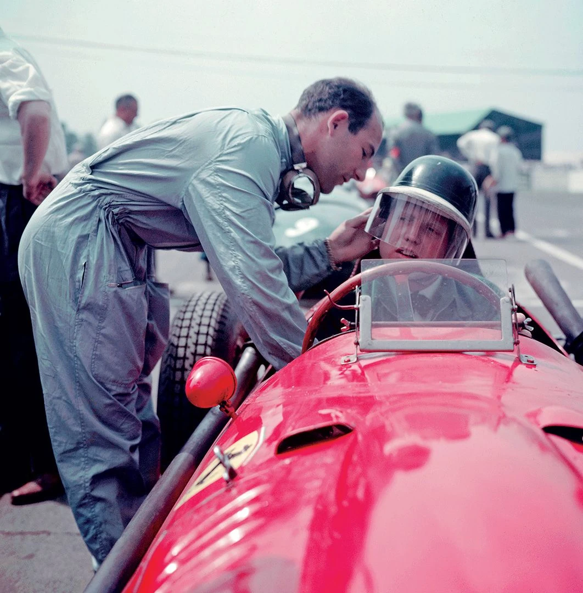
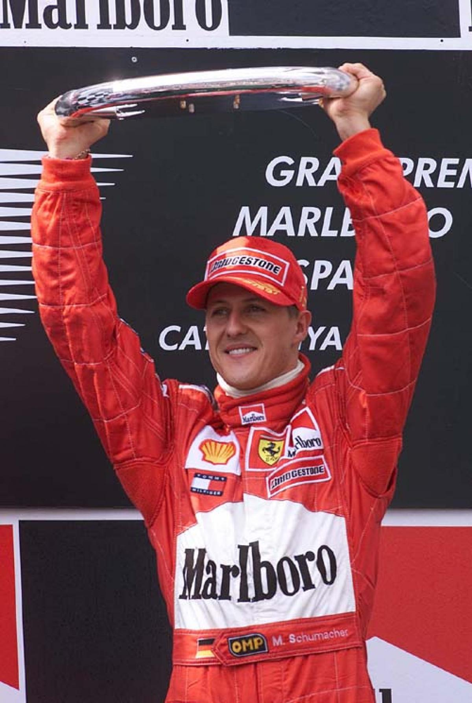

A Scuderia Ferrari contava com um grupo de pilotos notáveis, incluindo figuras como Alberto Ascari, Luigi Villoresi e Raymond Sommer. Alberto Ascari se destacou como um dos principais pilotos da equipe. O marco mais notável de 1950 foi a conquista da primeira vitória da Scuderia Ferrari na história da Fórmula 1. Essa vitória memorável ocorreu no Grande Prêmio da Inglaterra, realizado em Silverstone, e foi alcançada por Giuseppe Farina. A Scuderia Ferrari também fez história ao garantir o título de Construtores, tornando-se a primeira equipe a fazê-lo na história da Fórmula 1. Esse feito refletiu a excelência e a consistência do desempenho da equipe ao longo da temporada de 1950, solidificando seu lugar no pódio das corridas automobilísticas de elite..
Em 1951, a Scuderia Ferrari escreveu mais um capítulo emocionante em sua história na Fórmula 1. Este ano viu a continuação do sucesso da equipe italiana, marcando a segunda temporada da categoria mais prestigiosa do automobilismo. O piloto da Scuderia Ferrari, Alberto Ascari, emergiu como uma figura central nesse ano. Com sua habilidade excepcional ao volante, ele dominou a temporada e conquistou o título de Campeão Mundial de Pilotos de 1951. Ascari, conhecido por sua destreza nas pistas, venceu seis das oito corridas da temporada, incluindo o Grande Prêmio da Itália em Monza, que foi particularmente significativo para a equipe, dada sua base em Maranello, Itália. Além disso, a Scuderia Ferrari também se sagrou campeã no Campeonato de Construtores de 1951, consolidando ainda mais sua posição como uma das equipes mais respeitadas na Fórmula 1. Esta conquista refletiu não apenas o talento de Ascari, mas também o compromisso e a engenhosidade da equipe em projetar carros de corrida competitivos.
Em 1952, a Scuderia Ferrari manteve sua impressionante trajetória de sucesso na Fórmula 1, consolidando sua posição como uma das equipes mais dominantes da categoria. O título da temporada de 1952 marcou mais um triunfo para a equipe italiana e seus pilotos, com Alberto Ascari novamente desempenhando um papel crucial. O piloto Alberto Ascari, que já havia conquistado o título de pilotos no ano anterior, defendeu seu título com maestria. Ascari venceu seis das sete corridas do campeonato de 1952, demonstrando sua notável habilidade nas pistas e sua profunda conexão com a Ferrari. Ele se tornou bicampeão consecutivo da Fórmula 1, solidificando seu status como um dos pilotos mais talentosos e bem-sucedidos da época. Além do sucesso de Ascari, a Scuderia Ferrari também garantiu o título de Construtores em 1952. Isso demonstrou a excelência da equipe na fabricação de carros de corrida de alto desempenho e na gestão de um programa esportivo bem-sucedido.
O título da temporada de 1956 na Fórmula 1 foi mais um marco de sucesso para a Scuderia Ferrari e um momento emocionante na história da equipe italiana. Nesse ano, a Scuderia Ferrari celebrou a vitória de Juan Manuel Fangio, um dos maiores pilotos da história da Fórmula 1, que se juntou à equipe para competir. Juan Manuel Fangio, o argentino conhecido como "El Maestro," fez uma parceria notável com a Scuderia Ferrari em 1956. Ele já era um campeão mundial consagrado e rapidamente provou ser uma escolha brilhante para a equipe italiana. Fangio conquistou um total de três vitórias naquela temporada, ajudando a Scuderia Ferrari a conquistar o título de Construtores de 1956. Isso destacou a importância de ter um piloto experiente e altamente talentoso como Fangio ao volante dos carros da Ferrari. O título de Campeão Mundial de Pilotos de 1956 também foi para Juan Manuel Fangio, seu quarto título na carreira. Sua conquista reforçou ainda mais sua reputação como um dos maiores pilotos de todos os tempos.

Em 1958, Hawthorn pilotava para a equipe Scuderia Ferrari e competiu contra Stirling Moss, outro grande piloto britânico da época. Mike Hawthorn conquistou o título na última corrida da temporada, o Grande Prêmio de Marrocos, tornando-se o campeão mundial com apenas um ponto de vantagem sobre Moss. Isso fez de Hawthorn uma figura notável na história da Fórmula 1, como o primeiro britânico a conquistar o título de pilotos. Infelizmente, a carreira de Mike Hawthorn foi marcada por tragédias. Ele teve um papel indireto no acidente que levou à morte de seu amigo e colega de equipe, Peter Collins, no Grande Prêmio da Alemanha em 1958. A morte de Collins abalou Hawthorn, mas ele continuou a competir e, finalmente, conquistou o título. No entanto, Hawthorn decidiu se aposentar no final da temporada de 1958.
Em 1961, o mundo da Fórmula 1 testemunhou um feito notável, quando o piloto norte-americano Phil Hill conquistou o título de Campeão Mundial de Pilotos. Pilotando pela lendária equipe Scuderia Ferrari, Hill escreveu seu nome nos anais da história do automobilismo ao tornar-se o primeiro piloto dos Estados Unidos a alcançar esse prestigioso feito. A temporada de 1961 foi marcada por uma intensa competição, com Hill enfrentando adversários de peso, incluindo seu colega de equipe Wolfgang von Trips e o renomado piloto britânico Stirling Moss. A luta pelo título se desenrolou ao longo do ano, com reviravoltas emocionantes em várias corridas. No entanto, o momento decisivo ocorreu no Grande Prêmio da Itália em Monza. Nessa corrida memorável, Hill não apenas conquistou a vitória, mas também assegurou o título de pilotos.
Em 1964, o renomado piloto britânico John Surtees fez história ao conquistar o título de Campeão Mundial de Pilotos da Fórmula 1. Essa vitória foi um marco significativo tanto para Surtees quanto para a equipe Scuderia Ferrari, para a qual ele competia naquela temporada. A temporada de 1964 foi repleta de emoções e desafios, com Surtees enfrentando concorrentes de peso, incluindo Jim Clark e Graham Hill. No entanto, a determinação e a habilidade de Surtees se destacaram. A batalha pelo título culminou no Grande Prêmio do México, a última corrida da temporada, onde Surtees não apenas venceu a corrida, mas também assegurou o título de Campeão Mundial de Pilotos para a Scuderia Ferrari. O triunfo de John Surtees em 1964 é notável não apenas pelo título conquistado, mas também porque ele se tornou o primeiro piloto na história a conquistar campeonatos mundiais tanto em corridas de motocicletas como em corridas de carros. Sua versatilidade nas pistas e seu sucesso em ambas as disciplinas são testemunhos de seu notável talento e determinação.
Em 1975, Niki Lauda, o talentoso piloto austríaco, escreveu uma história notável ao conquistar seu primeiro título de Campeão Mundial de Pilotos na Fórmula 1. Nesse ano, Lauda pilotava para a equipe Scuderia Ferrari, e sua determinação e habilidade foram fundamentais para sua vitória. A temporada de 1975 foi marcada por uma competição acirrada entre Lauda e seus rivais na pista. Lauda teve um desempenho impressionante ao longo do ano, conquistando vitórias e consistentemente marcando pontos em várias corridas. No entanto, um dos momentos mais emblemáticos dessa temporada foi o Grande Prêmio da Alemanha, realizado em Nürburgring. Durante a corrida, Lauda sofreu um grave acidente que o deixou com queimaduras graves no rosto e na cabeça. Sua incrível recuperação e determinação se tornaram lendárias no mundo das corridas. Após o acidente, Lauda voltou às pistas em tempo recorde, demonstrando sua coragem e paixão pelo esporte. Sua resiliência e habilidade o levaram a garantir o título de Campeão Mundial de Pilotos no final da temporada de 1975, tornando-se o primeiro título mundial de sua carreira.
A temporada de 1977 foi marcada por intensas rivalidades nas pistas, mas uma das mais notáveis era a disputa entre Lauda e o piloto britânico James Hunt, que pilotava para a equipe McLaren. A rivalidade entre os dois se tornou um dos elementos mais cativantes daquele ano, cativando os fãs do esporte. O que tornou a conquista de Lauda em 1977 ainda mais notável foi o fato de que, apenas um ano antes, ele havia sofrido um terrível acidente que o deixou gravemente queimado. Sua recuperação rápida e seu retorno às corridas após o acidente demonstraram sua resiliência e determinação inabaláveis. Ao longo da temporada, Lauda exibiu consistência notável, acumulando vitórias e pontos cruciais em sua busca pelo título. Sua abordagem estratégica e sua habilidade nas pistas o levaram a superar Hunt na batalha pelo campeonato. O título de Campeão Mundial de Pilotos em 1977 representou uma conquista monumental para Niki Lauda, destacando sua incrível recuperação após o acidente e seu comprometimento com o esporte.
Em 1979, Jody Scheckter, o piloto sul-africano de Fórmula 1, atingiu o ápice de sua carreira ao conquistar o título de Campeão Mundial de Pilotos. Essa conquista marcou não apenas o sucesso individual de Scheckter, mas também a glória da equipe Scuderia Ferrari, para a qual ele competia naquela temporada. A temporada de 1979 foi uma batalha intensa nas pistas, com Scheckter competindo contra adversários formidáveis, incluindo seu companheiro de equipe Gilles Villeneuve, que era conhecido por seu talento excepcional. A Scuderia Ferrari, uma equipe com uma rica história na Fórmula 1, estava determinada a recuperar o título de pilotos que escapara por uma década. Jody Scheckter demonstrou um desempenho notável ao longo da temporada, com uma abordagem calculada e consistente. Ele acumulou vitórias e pontos vitais, mantendo-se à frente da concorrência na corrida pelo título. O momento culminante ocorreu no Grande Prêmio da Itália, em Monza, quando Scheckter venceu a corrida e, com ela, assegurou o título de Campeão Mundial de Pilotos de 1979. Sua conquista trouxe uma alegria imensa para a Ferrari e para seus inúmeros fãs ao redor do mundo.
Em 2000, Michael Schumacher fez história na Fórmula 1 ao conquistar seu primeiro Campeonato Mundial de Pilotos pela ferrari. Schumacher estabeleceu o início de uma era de domínio nas pistas. A temporada de 2000 foi uma exibição brilhante do talento e da determinação de Schumacher. Com nove vitórias em 17 corridas, ele demonstrou uma consistência excepcional e um desempenho notável. Seu estilo de pilotagem destemido e estratégico o destacou como um dos melhores da categoria. A conquista do título de Campeão Mundial de Pilotos ocorreu no Grande Prêmio do Japão, em Suzuka, uma corrida que também garantiu o título de Construtores para a Ferrari. Essa vitória emocionante foi celebrada com entusiasmo não apenas pela equipe italiana, mas por fãs de todo o mundo. O primeiro título de Schumacher em 2000 representou uma virada marcante para a Scuderia Ferrari, que não conquistava um título de pilotos desde 1979. Além disso, solidificou a posição de Schumacher como um dos maiores pilotos da história da Fórmula 1.

No ano de 2001, Michael Schumacher alcançou uma proeza notável na Fórmula 1, conquistando seu segundo título consecutivo de Campeão Mundial de Pilotos. Pilotando novamente pela Scuderia Ferrari, Schumacher reafirmou seu domínio nas pistas, consolidando-se como um dos maiores pilotos da história. A temporada de 2001 foi um desfile de sucesso para Schumacher. Com nove vitórias em 17 corridas e uma sequência impressionante de pódios, ele demonstrou uma combinação de habilidade, consistência e estratégia que o destacou como líder incontestável. Ao lado de seu talentoso companheiro de equipe, Rubens Barrichello, a Ferrari se revelou invencível. O momento decisivo aconteceu no Grande Prêmio da Hungria, onde Schumacher venceu a corrida e estabeleceu um recorde de pontos naquela época. Com isso, ele assegurou o título de Campeão Mundial de Pilotos com antecedência, um testemunho de sua completa supremacia naquele ano.
Em 2002, Michael Schumacher alcançou um feito notável na Fórmula 1, conquistando seu terceiro título de Campeão Mundial de Pilotos. Schumacher estava pilotando novamente para a equipe Scuderia Ferrari, e a temporada de 2002 foi um exemplo impressionante de seu domínio nas pistas. Schumacher demonstrou um desempenho excepcional durante toda a temporada, acumulando uma série de vitórias e pódios. Sua habilidade, consistência e conhecimento estratégico das corridas o destacaram como um dos pilotos mais talentosos e completos da história da Fórmula 1. O título de Campeão Mundial de Pilotos em 2002 foi assegurado com várias corridas de antecedência, refletindo a supremacia esmagadora de Schumacher naquele ano. Sua capacidade de extrair o melhor do carro e sua parceria com a Scuderia Ferrari provaram ser imbatíveis. O sucesso de Schumacher em 2002 não apenas garantiu seu terceiro título mundial, mas também contribuiu para a conquista do título de Construtores pela Ferrari, consolidando ainda mais o status da equipe italiana como uma das mais poderosas na Fórmula 1.
Em 2003, Michael Schumacher escreveu mais um capítulo notável de sua carreira na Fórmula 1, conquistando seu quarto título de Campeão Mundial de Pilotos. A temporada marcou outra demonstração do domínio de Schumacher e da Scuderia Ferrari nas pistas. Schumacher estava novamente no comando de sua Ferrari, e a temporada de 2003 viu uma exibição consistente de seu talento, determinação e estratégia de corrida. A parceria entre Schumacher e a equipe italiana provou ser imbatível. Com vitórias em várias corridas e um desempenho notável, Schumacher acumulou uma vantagem confortável na classificação de pilotos. Sua abordagem calculada e sua habilidade nas pistas o destacaram como um competidor formidável. O título de Campeão Mundial de Pilotos em 2003 foi conquistado com várias corridas de antecedência, selando o domínio absoluto de Schumacher naquele ano. Sua vitória também contribuiu para o título de Construtores da Ferrari, reafirmando o status da equipe como uma das mais poderosas da Fórmula 1.
Em 2004, Michael Schumacher alcançou o que seria o seu sétimo e último título de Campeão Mundial de Pilotos na Fórmula 1, encerrando sua carreira na categoria máxima do automobilismo com um desempenho espetacular. A temporada de 2004 foi mais um exemplo do domínio de Schumacher e da Scuderia Ferrari nas pistas. Schumacher, ao volante da Ferrari, exibiu uma maestria excepcional ao longo do ano, vencendo 13 das 18 corridas da temporada. Sua habilidade, consistência e profundo conhecimento das estratégias de corrida o tornaram um adversário formidável. O sétimo título mundial de Schumacher não apenas consagrou seu status como um dos maiores pilotos da história, mas também o igualou ao lendário Juan Manuel Fangio em número de títulos, um recorde que perduraria por anos. Esse feito é uma testemunha vívida de sua excelência nas pistas e sua influência duradoura no esporte a motor.
Em 2004, Michael Schumacher alcançou o que seria o seu sétimo e último título de Campeão Mundial de Pilotos na Fórmula 1, encerrando sua carreira na categoria máxima do automobilismo com um desempenho espetacular. A temporada de 2004 foi mais um exemplo do domínio de Schumacher e da Scuderia Ferrari nas pistas. Schumacher, ao volante da Ferrari, exibiu uma maestria excepcional ao longo do ano, vencendo 13 das 18 corridas da temporada. Sua habilidade, consistência e profundo conhecimento das estratégias de corrida o tornaram um adversário formidável. O sétimo título mundial de Schumacher não apenas consagrou seu status como um dos maiores pilotos da história, mas também o igualou ao lendário Juan Manuel Fangio em número de títulos, um recorde que perduraria por anos. Esse feito é uma testemunha vívida de sua excelência nas pistas e sua influência duradoura no esporte a motor.
Ao longo da história, a Scuderia Ferrari conquistou 15 titulos mundiais de pilotos e 16 titulos de construtores. Ambas são as maiores marcas no automobilismo!